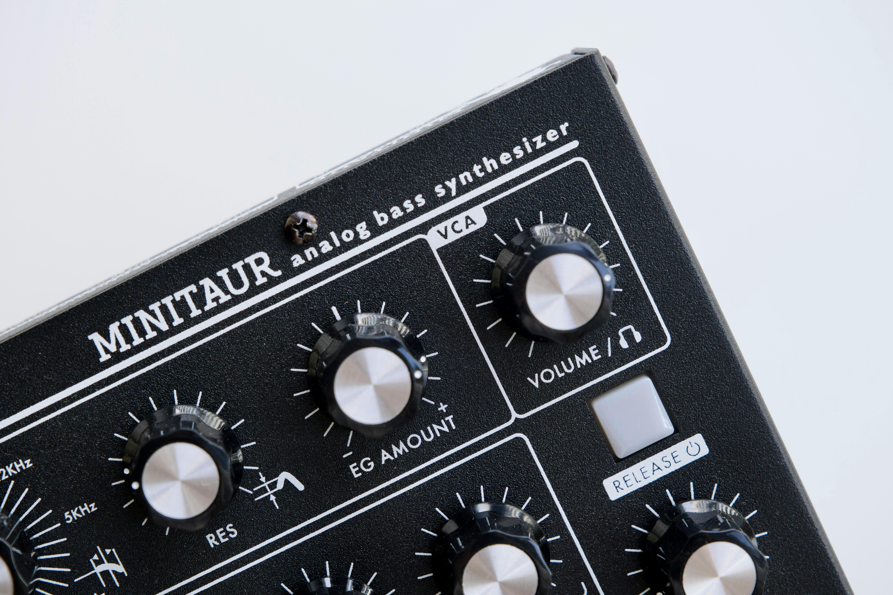

Explora el Fascinante Mundo de los Sintetizadores
Descubre cómo la sintesis influye en nuestra percepción y emociones.
Aprende más Galería

Descubre cómo la sintesis influye en nuestra percepción y emociones.
Aprende más GaleríaLos sintetizadores crean sonidos electrónicamente en lugar de grabarlos de instrumentos reales.
Permiten alterar tono, timbre y envolventes para diseñar sonidos únicos.
Son usados en muchos géneros musicales y producciones audiovisuales.
Han revolucionado la creación musical desde su aparición.
Explorá diferentes tipo de sintetizadores y modelos más utilizados en el mercado de la producción musical
Usa circuitos electrónicos analógicos. Son conocidos por su calidez y carácter orgánico.
Genera sonido a través de procesamiento digital (DSP), lo que permite más precisión, variedad de timbres y sonidos complejos como síntesis FM o wavetable.

Compuesto por módulos separados que se conectan con cables para crear señales de audio y control, ofreciendo máxima flexibilidad para diseñar sonidos únicos.
Parte de una señal rica en armónicos (como un oscilador en forma de onda) y va quitando frecuencias con filtros para modelar el sonido deseado.
Usa la modulación de frecuencia para crear sonidos complejos, metálicos y digitales, popularizado por el Yamaha DX7 en los 80s.
Reproduce tablas de ondas (wavetables) que contienen diferentes formas de onda y permite hacer transiciones suaves entre ellas para sonidos muy dinámicos.
Clasificación de los tipos de síntesis más utilizados.
Suscríbete a nuestro newsletter sobre sintetizadores y síntesis